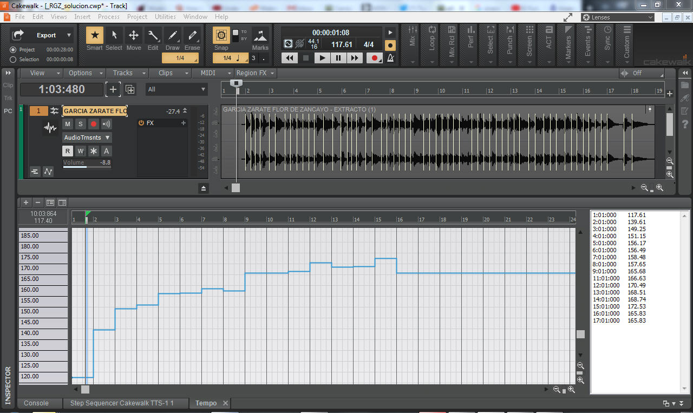

Un ejemplo práctico
Imagina que estamos en una reunión con un guitarrista popular que toca piezas de música. Si acompañas el pulso de la música con el pie o palmas o una pandereta notarás que en muchas piezas el músico no sigue un pulso constante como un metrónomo. Hay momentos en que acelera el tempo otras en que desacelera. En música este parámetro se denomina "caracter" y en muchas músicas es parte fundamental de la expresión musical. Por ejemplo en un yaraví.
En la música clásica, el jazz quiza encuentres ejemplos más evidentes pero te mostraré dos ejemplos:
- Raúl García Zárate - Flor de Sancayo :
Reto: ¿Puedes darte cuenta en qué momento el maestro García Zárate "corre" o se "frena"?
- Squeeze - Splitting into three:
En este último ejemplo te darás cuenta del efecto de aceleración que los músicos imprimen en su interpretación.
Caso: Imagína que queremos añadirle una pandereta a la interpretación de Raúl García Zárate.
Podemos solucionarlo así:
1. Grabamos en una pista el sonido de pandereta mientras escuchamos la interpretación. Habrá errores y luego habrá que corregir las imprecisiones.
2. "Estirar" la interpretación del músico para que de ajuste a un metrónomo fijo del programa. Esta solución destruiría el caracter de la música. Recuerda que mucha música es música por esa razón.
3. Conseguimos que el proyecto "persiga" al músico, que actúe como cuando nosotros estamos acompañando con la pandereta pero sea preciso donde tocar.
Para esta última solución es la creación del mapa de tempo.
Escucha la pieza de Raul García cómo no coincide con el metrónomo:
Ahora escucha cómo nuestro proyecto "persigue" al maestro en su interpretación
Al inicio escucharás que el metrónomo va a lo suyo, pero una vez que la pieza de audio empieza, el proyecto persigue el pulso...
A partir de aquí cualquier evento MIDI que secuenciemos seguirá fielmente el mapa de tempo creado, por ejemplo aquí le agregamos con el step sequencer un bombo y una pandereta en negras:
O, siendo gentilmente bizarros, podríamos atrevernos a...
Observa, finalmente cómo ha quedado nuestro mapa de tempo. Tienes una representación gráfica, en el eje vertical aprecias los valores del metrónomo y en el horizontal los compases.
Mira los valores de la izquierda, tienes una lista de todos los valores del metrónomo...

¿Te animas a desarrollarlo tú con algun fragmento de tu canción favorita?